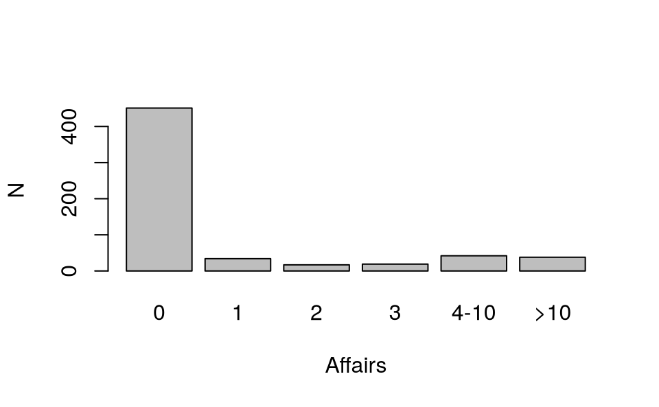
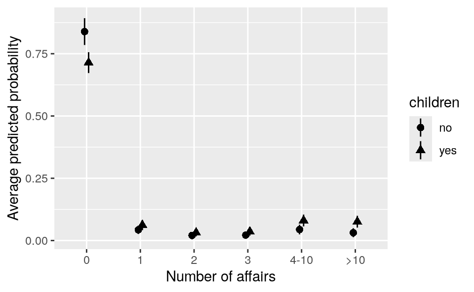

11 分类和有序结果变量
从模型到意义 - 中文翻译
来源：Vincent Arel-Bundock，《从模型到意义：如何在 R 和 Python 中解释统计模型》——第 11 章 分类和有序结果。 来源说明：截至 2026-09-19，修订版本 870f15a0 的公开代码仓库不包含本章的完整 .qmd 源文件。本页面根据同日下载的公开 HTML 快照翻译而成。因此，R/Python 代码和图形均以静态形式展示；上游代码未在本站重新执行。 网站文本 (C) 2025 Vincent Arel-Bundock，保留所有权利；marginaleffects 软件代码采用 GPL-3 许可证。 本页面为中文翻译，并非原文；其翻译和发布依据本 Notes 网站所使用的授权声明进行。
本章展示了如何利用第一部分和第二部分介绍的框架与工具，为通过拟合分类结果或有序结果模型获得的估计值赋予意义。
当回归模型的结果变量是离散的，并且包含有限个类别时，我们称其为分类结果。分类结果在数据分析中非常常见，例如，当人们希望对交通方式的选择（如汽车、公交车、自行车、步行）进行建模时。处理这类数据的一种常见方法是拟合多项逻辑回归模型。
当回归模型的结果变量是离散的、包含有限个类别，并且具有自然顺序时，我们称其为有序结果。有序结果在数据分析中也非常常见，例如，当人们希望对满意度水平（非常不满意、不满意、中立、满意、非常满意）进行建模时。一种常见方法是拟合有序 probit 模型，其中结果变量的每个类别 \j\ 的概率建模为（Cameron and Trivedi 2005）
\P(Y = j) = F(_j - ) - F(_{j-1} - )\
其中，\mathbf{X}\ 表示预测变量向量，\beta\ 表示系数向量，\theta_j\ 和 \theta_{j-1}\ 表示界定类别 \j\ 与 \j-1\ 之间边界的阈值参数，\F\ 表示标准正态累积分布函数。
多项逻辑回归或有序 probit 等模型的显著特征是：它们会针对结果变量的每个水平估计不同的参数。这使分析者能够针对因变量的每个水平估计不同的感兴趣量——预测、反事实比较和斜率。本章重点讨论有序 probit 情形，但同一工作流程也适用于范围更广的模型类别，包括其他多项式和有序方法。
我们考虑由杂志 Psychology Today 于 1969 年收集、并由 Fair（1978）分析的婚外情数据集。这些数据包含 601 份美国已婚人士的调查回答，涉及人口统计、婚姻和个人特征：性别、年龄、结婚年限、子女、宗教虔诚度、教育程度、职业以及对婚姻幸福度的自我评价。
我们分析中的结果变量是 affairs，该变量记录过去一年中自我报告的婚外性行为频率：0、1、2、3、4-10 或 >10。下面的代码加载数据并绘制结果变量的分布。
library(MASS)
library(ggplot2)
library(marginaleffects)
dat = get_dataset("affairs")
barplot(table(dat$affairs), ylab = "N", xlab = "Affairs")

为了研究婚外情次数的决定因素，我们指定一个有序 probit 回归模型，其中包含三个预测变量：表示调查对象是否有子女的二元变量、结婚至今的年数，以及性别二元指标。拟合模型时，我们使用 polr() 函数，该函数位于 MASS 包中。
mod = polr(
affairs ~ children + yearsmarried + gender,
method = "probit", data = dat, Hess = TRUE)
summary(mod)
Coefficients:
Value Std. Error t value
childrenyes 0.17290 0.1506 1.1477
yearsmarried 0.03457 0.0116 2.9793
genderwoman -0.08851 0.1075 -0.8234
Intercepts:
Value Std. Error t value
0|1 1.0553 0.1336 7.8970
1|2 1.2524 0.1357 9.2300
2|3 1.3647 0.1372 9.9471
3|4-10 1.5057 0.1394 10.8010
4-10|>10 1.9363 0.1495 12.9536该模型中的系数可以看作衡量潜在变量随预测变量变化而发生的变化。不幸的是，围绕这一潜在变量建立直觉较为困难，参数估计值也没有直接明了的解释。我们不再聚焦于这些估计值，而是像本书前文所做的那样，将原始参数转换为更直观的感兴趣量：预测、反事实比较和斜率。
11.1 预测
后估计工作流程的第一步是计算平均预测。在分类结果模型中，预测以概率尺度表示。重要的是，该模型允许我们针对结果变量的每个水平分别进行一次预测。
假设我们特别关注这样一个量：一名有子女、已婚 10 年的女性预期会有多少次婚外情。为计算这一量，我们使用 datagrid() 函数构建网格，并调用 predictions() 函数。1
p = predictions(mod, newdata = datagrid(
children = "yes",
yearsmarried = 10,
gender = "woman"))
p
|——-|———-|————|——-|————-|——–|——–|
该拟合模型预测，这名女性没有婚外情的概率为 73%，有一次婚外情的概率为 6%。
我们也可以不再报告个体案例的预测概率，而是为数据集中的所有个体计算预测概率，然后取其平均值。与前面各章一样，调用 avg_predictions() 会返回边际预测。
p = avg_predictions(mod)
p
|——-|———-|————|——-|————-|——–|——–|
由于我们使用的是分类结果模型，avg_predictions() 函数会自动针对每个结果变量水平返回一个平均预测概率。各组的标识符位于输出数据框的 group 列中。
colnames(p)
[1] "group" "estimate" "std.error" "statistic" "p.value" "s.value"
[7] "conf.low" "conf.high" "df"
p$group
[1] 0 1 2 3 4-10 >10
Levels: 0 1 2 3 4-10 >10不出所料，根据图 11.1，affairs=0 的预期概率（75%）远高于其他任何结果变量水平。相比之下，调查对象一年内婚外情次数超过 10 次的平均预测概率为 6%。
正如我们在第 5 章所看到的，计算不同亚组的平均预测很容易。例如，如果我们想知道有子女和没有子女的调查对象处于每个结果变量水平的预期概率，可以调用以下代码。
p = avg_predictions(mod, by = "children")
head(p, 2)
|——-|———-|———-|————|——|————-|——-|——–|
平均而言，没有子女的调查对象有零次婚外情的预测概率为 84%。相比之下，有子女的调查对象的平均预测概率为 71%。
我们也可以使用类似的调用绘制这些数值，利用 by 参数对结果变量 group 与 children 预测变量各种组合下的预测进行边际化。
plot_predictions(mod, by = c("group", "children")) +
labs(x = "Number of affairs", y = "Average predicted probability")

图 11.2 再次显示，最可能出现的调查回答绝大多数是零。此外，该图表明，有子女和没有子女的人之间的平均预测概率差异非常小。下一节采用明确的反事实方法后，这一印象将得到证实。
在某些情况下，将不同的结果变量水平类别合并起来可能很有用。例如，分析者可能希望知道调查对象报告至少一次婚外情的概率。为此，我们必须计算 group 值大于 0 的所有预测概率之和。
一种有效的策略是定义一个自定义函数，然后将其作为 hypothesis 参数传入 avg_predictions()。如该函数手册所述，2自定义假设函数必须接受调用不带 hypothesis 参数的函数时得到的同一个数据框，即包含 group、term 和 estimate 列的数据框。随后，自定义函数可以处理该输入，并返回包含 term 和 estimate 列的新数据框。
例如，下面定义的自定义函数接受一个数据框 x，按组别类别合并预测概率，并返回一个包含新估计值的数据框。
hyp = function(x) {
x$term = ifelse(x$group == "0", "0", ">0")
aggregate(estimate ~ term + children, FUN = sum, data = x)
}
p = avg_predictions(mod, by = "children", hypothesis = hyp)
p
|——|———-|————|——-|————-|——–|——–|
平均而言，没有子女的调查对象报告至少一次婚外情的预测概率为 16%。
上面的自定义函数使用 aggregate() 函数按亚组求和；该函数自 20 世纪以来就已存在于基础 R 中。使用 tidyverse 惯用写法也可以得到相同结果。
library(tidyverse)
hyp = function(x) {
x %>%
mutate(term = if_else(group == "0", "0", ">0")) %>%
summarize(estimate = sum(estimate), .by = c("term", "children"))
}
avg_predictions(mod, by = "children", hypothesis = hyp)
11.2 反事实比较
在查看预测之后，采用明确的反事实视角来量化预测变量与结果变量之间关联的强度是合理的。我们的首要目标是回答这样一个问题：如果我们增加结婚年数，同时保持其他预测变量不变，报告的婚外情次数会发生什么变化？
为回答这一问题，我们使用 avg_comparisons() 函数，并通过 variables 参数定义焦点预测变量的变化。3
avg_comparisons(mod, variables = list(yearsmarried = 5))
|——-|———-|————|——-|————-|———–|———-|
cmp = avg_comparisons(mod, variables = list(yearsmarried = 5))
平均而言，将 yearsmarried 变量增加 5 会使 affairs 等于零的预测概率降低 5.6 个百分点。平均而言，将 yearsmarried 增加 5 会使 affairs 大于 10 的预测概率提高 2.4 个百分点。这些反事实比较对应的 值较小，因此我们可以拒绝 yearsmarried 对预测的 affairs 次数没有影响这一原假设。
相比之下，如果我们估计 gender 的反事实效应，会发现预测概率的差异很小，并且在统计上不显著。我们不能拒绝 gender 对 affairs 没有影响这一原假设。
avg_comparisons(mod, variables = "gender")
|——-|———-|————|——–|————-|———-|———|
总之，本章展示了如何有效利用分类和有序结果模型（如有序 probit）来解释复杂数据。通过将原始参数估计值转换为预测和反事实比较等直观量，分析者可以获得关于数据的有意义洞见。这种方法不仅提高了模型结果的可解释性，也有助于向更广泛的受众清晰传达研究发现。
Cameron, A Colin, and Pravin K Trivedi. 2005. Microeconometrics: Methods and Applications. Cambridge university press. Fair, Ray C. 1978. “A Theory of Extramarital Affairs.” Journal of Political Economy 86: 45–61.
在
R中，可以输入?avg_predictions访问函数手册。在Python中，可以输入help(avg_predictions)访问该手册。该手册也发布于 https://marginaleffects.com↩︎